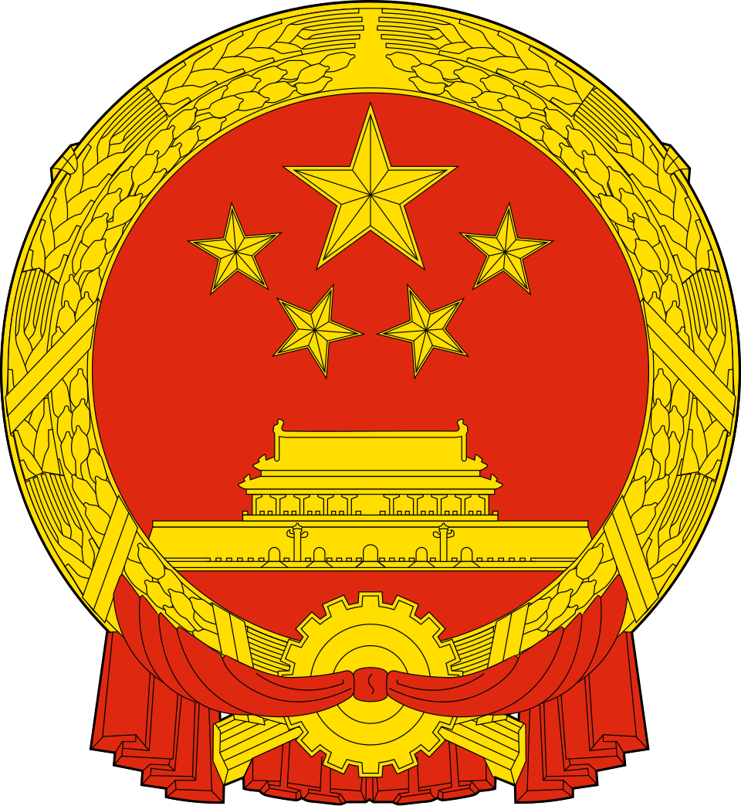

ตราสัญลักษณ์ 标识

เป็นรูปวงกลมสีแดง ขอบสีทอง ล้อมรอบด้วยรวงข้าวและฟันเฟือง ตรงกลางมีภาพประตูเทียนอันเหมินและดาวห้าแฉกสีทอง 5 ดวง
ดาวห้าแฉกสีทอง 5 ดวง
ดวงเล็ก 4 ดวงสื่อถึง 4 ชนชั้นทางสังคม (กรรมกร, ชาวนา, นายทุนน้อย, นายทุนแห่งชาติ)
ประตูเทียนอันเหมิน (Tiananmen)
ตั้งอยู่ใจกลางวงกลม สื่อถึงศูนย์กลางอำนาจ, จิตวิญญาณแห่งชาติ และสถานที่ประกาศก่อตั้งประเทศในปี 1949
รวงข้าวสาลีและข้าวเจ้า
ล้อมรอบด้านนอกสื่อถึงการปฏิวัติเกษตรกรรมและความอุดมสมบูรณ์
ฟันเฟือง (Gear)
อยู่ด้านล่างสุด สื่อถึงชนชั้นกรรมาชีพหรือกรรมกรอุตสาหกรรม
สีแดงและสีทอง
สีแดงสื่อถึงการปฏิวัติและความโชคดี ส่วนสีทองสื่อถึงความเจริญรุ่งเรือง